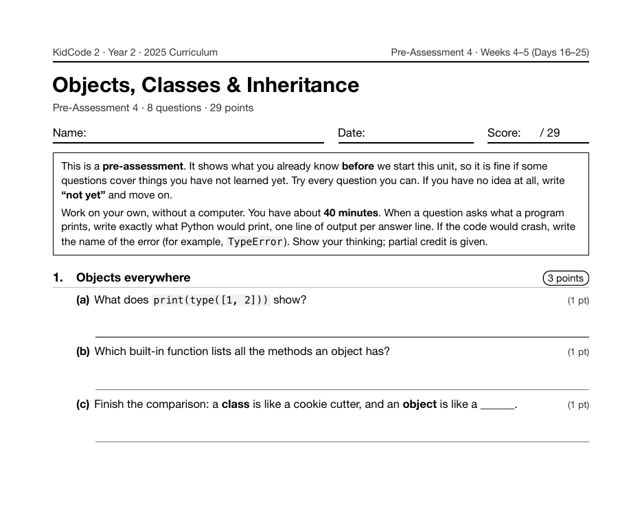

Year 2 · 2025 · Building Complexity
Project 10: Virtual Pet Care
Virtual Pet Care is Project 10, on Day 20 of Year 2, at the end of the first week of object-oriented programming: class, __init__, self, methods, and __str__. Students design the pet on paper, then code its hunger and happiness meters, a daily menu, and saving to JSON.
What I taught that week
From the Year 2 curriculum, Week 4: Objects & Classes
Day 16: Everything Is an Object. Discovering that str, list, and dict are classes and that methods are functions belonging to objects. Exploring with type(), dir(), and help(). A class is a blueprint, like a cookie cutter.
Day 17: Your First Class. Writing a class with class, __init__, self, and attributes, then creating several instances. Practice: a Pet class with name, species, and energy.
Day 18: Methods & Readable Objects. Giving objects behaviors: methods like feed() and play() that change attributes, and methods that return values. Using __str__ so print(pet) is readable.
Day 19: Objects Working Together. Storing objects in lists, objects that hold other objects (a Team with Players), and class vs. instance attributes. Practice: "Zoo Manager".
Day 20: Lab: Virtual Pet Care. Project 4. Designing a pet on paper, then coding hunger and happiness meters, a daily menu of actions, and saving the pet to a JSON file. Classmates trade pets and keep them alive.
What students built
60 students built a pet. Every one defines a class with __str__, so print(pet) shows something readable, and saves the pet to JSON so it is still there tomorrow. The median program is 84 lines.
One student's program
This is one real submission, shown as the student wrote it apart from the removed name header. It was chosen by a fixed rule rather than for being the best: it is the submission closest to the project's median length among those that ran cleanly and contain nothing that could identify anyone. Parts are skipped where marked with …
class Pet:
def __init__(self, name, hunger=5, happiness=5, coins=0, food_stock=3, day=1):
self.name = name
self.hunger = hunger
self.happiness = happiness
self.coins = coins
self.food_stock = food_stock
self.day = day
def feed(self):
if self.food_stock == 0:
print("No food left! Buy some first.")
return
self.food_stock -= 1
self.hunger = max(0, self.hunger - 4)
print(f"{self.name} devours tuna. Meow!")
def play(self):
self.happiness = min(10, self.happiness + 3)
self.hunger = min(10, self.hunger + 1)
self.coins += 2
print(f"{self.name} plays with a feather wand and earns 2 coins.")
def rest(self):
self.coins += 1
self.happiness = min(10, self.happiness + 1)
print(f"{self.name} rests in the sunny windowsill and finds 1 coin.")
def buy_food(self):
if self.coins >= 3:
self.coins -= 3
self.food_stock += 2
print("Bought 2 servings of tuna for 3 coins.")
else:
print("Not enough coins. Food costs 3.")
def end_day(self):
self.day += 1
self.hunger = min(10, self.hunger + 2)
self.happiness = max(0, self.happiness - 1)
def __str__(self):
return (f"{self.name} | day {self.day} | hunger {self.hunger} | happy {self.happiness} | "
f"coins {self.coins} | food {self.food_stock}")
def save_game(pet):
data = {"name": pet.name, "hunger": pet.hunger, "happiness": pet.happiness,
"coins": pet.coins, "food_stock": pet.food_stock, "day": pet.day}
with open(SAVE_FILE, "w") as f:
json.dump(data, f)
def load_game():
with open(SAVE_FILE) as f:
d = json.load(f)
return Pet(d["name"], d["hunger"], d["happiness"], d["coins"], d["food_stock"], d["day"])
A sample run of that program (the input was typed for this page)
Name your cat: Mochi Mochi | day 1 | hunger 5 | happy 5 | coins 0 | food 3 1 feed | 2 play (+2 coins) | 3 rest (+1 coin) | 4 buy food | 5 stats | q quit Choice: 2 Mochi plays with a feather wand and earns 2 coins. Mochi | day 1 | hunger 6 | happy 8 | coins 2 | food 3 1 feed | 2 play (+2 coins) | 3 rest (+1 coin) | 4 buy food | 5 stats | q quit Choice: 2 Mochi plays with a feather wand and earns 2 coins. Mochi | day 1 | hunger 7 | happy 10 | coins 4 | food 3 1 feed | 2 play (+2 coins) | 3 rest (+1 coin) | 4 buy food | 5 stats | q quit Choice: 4 Bought 2 servings of tuna for 3 coins. Mochi | day 2 | hunger 9 | happy 9 | coins 1 | food 5 1 feed | 2 play (+2 coins) | 3 rest (+1 coin) | 4 buy food | 5 stats | q quit Choice: 1 Mochi devours tuna. Meow! …
The worksheet for this unit
Each unit has a pre- and post-assessment written from the same curriculum. This is the first page of the pre-assessment for the unit this project sits in: Objects, Classes & Inheritance (Weeks 4–5 (Days 16–25), 8 questions).

Where it fits
The next project, Monster Battle Arena, takes the class and gives it children. Classes then reappear in Year 3 whenever a program has to keep track of several things at once: the capstone projects are all built around one.
Looking back
Object-oriented programming is the biggest conceptual jump in Year 2, and it shows up plainly in the code: no Year 1 program defines a class, while nearly half of all Year 2 programs do.